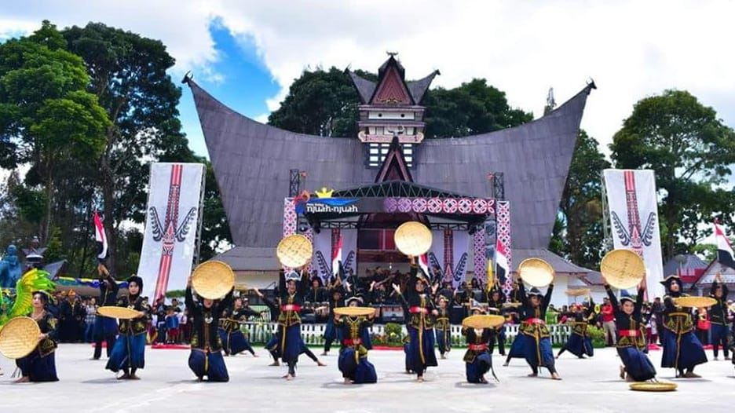
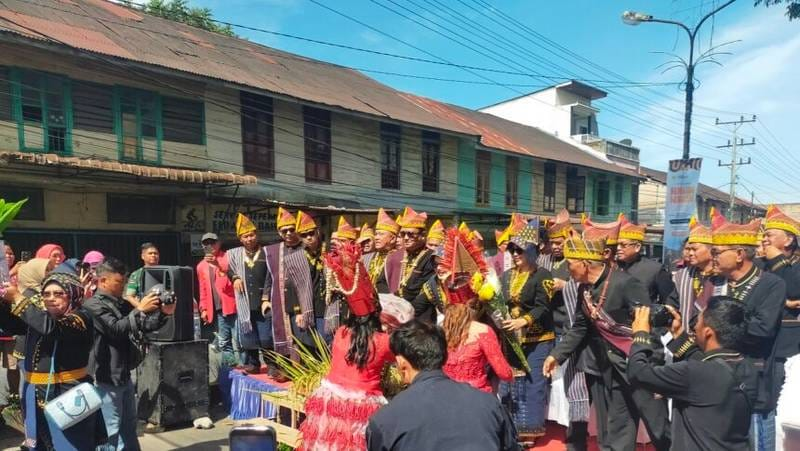
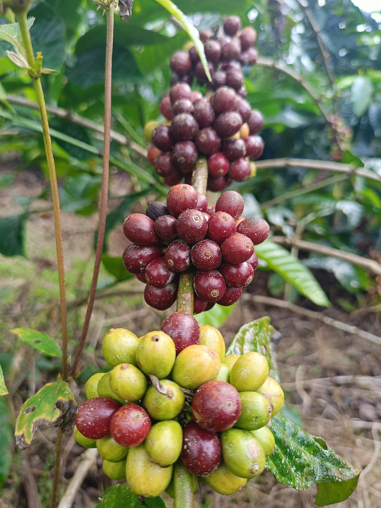
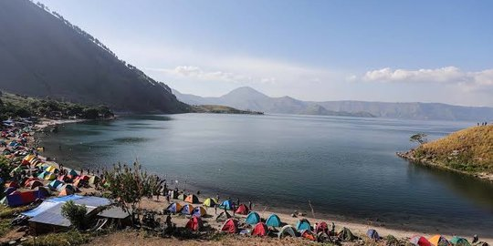

0%
"Mewujudkan pembelajaran inovatif untuk membentuk generasi yang sehat, aktif, dan berkarakter."
Perjalanan Profesional Menuju Guru yang Kompeten
Portofolio ini merupakan dokumentasi perjalanan profesional saya selama mengikuti Program Pendidikan Profesi Guru (PPG) Prajabatan. Melalui portofolio ini, saya ingin menunjukkan perkembangan kompetensi pedagogik, profesional, sosial, dan kepribadian yang telah saya capai selama program berlangsung.
Sebagai calon guru Pendidikan Jasmani, Kesehatan, dan Rekreasi (PJOK), saya percaya bahwa pendidikan jasmani bukan hanya tentang mengembangkan kemampuan fisik siswa, tetapi juga membentuk karakter, disiplin, dan nilai-nilai kehidupan yang akan berguna sepanjang hayat mereka.
Portofolio ini mencakup berbagai artefak pembelajaran, refleksi praktik mengajar, analisis pembelajaran, serta bukti-bukti kompetensi yang telah saya kembangkan. Semoga portofolio ini dapat memberikan gambaran yang komprehensif mengenai kesiapan saya untuk menjadi guru profesional yang berkualitas.
Mengenal Saya Lebih Dekat
Nama: Gomos Andreas Sianturi, S.Pd.
Tempat, Tanggal Lahir: Lae Parira, 1 April 2001
Asal Daerah: Sidikalang, Kabupaten Dairi, Sumatera Utara
Pendidikan Terakhir: S1 Pendidikan Jasmani, Kesehatan, dan Rekreasi (PJKR) Universitas Negeri Medan
Program Saat Ini: Pendidikan Profesi Guru (PPG)
Saya adalah seorang pendidik yang berdedikasi untuk mengembangkan kompetensi profesional sebagai guru PJOK. Lahir dan besar di Kabupaten Dairi, saya memiliki semangat untuk memberikan kontribusi nyata bagi kemajuan pendidikan di Indonesia, khususnya di bidang pendidikan jasmani.
Di waktu luang, saya memiliki hobi berenang yang membantu menjaga kesehatan fisik dan mental saya. Hobi ini juga menjadi inspirasi dalam mengembangkan metode pembelajaran yang menarik bagi siswa.
Universitas Negeri Medan
Kabupaten Dairi, Sumatera Utara
Kabupaten Dairi, Sumatera Utara
Kabupaten Dairi, Sumatera Utara
Kabupaten Dairi - Tanah Pakpak yang Kaya Budaya
Rumah adat tradisional suku Pakpak di Kabupaten Dairi yang memiliki arsitektur unik dengan atap tinggi dan dinding kayu. Rumah ini mencerminkan kearifan lokal dan filosofi hidup masyarakat Pakpak yang menjunjung tinggi nilai kebersamaan dan harmoni dengan alam.
Tradisi budaya tahunan masyarakat Pakpak yang dirayakan sebagai ungkapan syukur atas hasil panen. Pesta ini melibatkan berbagai aktivitas seperti tarian tradisional, musik daerah, dan hidangan khas yang mempererat kebersamaan antar warga dan melestarikan warisan budaya leluhur.
Kopi robusta premium dari dataran tinggi Sidikalang, Kabupaten Dairi yang terkenal dengan kualitasnya yang mendunia. Ditanam di ketinggian 1.000-1.500 meter di atas permukaan laut, kopi ini memiliki karakter rasa yang kuat dengan aroma khas yang menjadi kebanggaan petani lokal dan komoditas ekspor unggulan.
Danau vulkanik terbesar di dunia yang terletak di Sumatera Utara, menjadi keajaiban alam yang memukau. Danau seluas 1.707 km² ini memiliki Pulau Samosir di tengahnya dan menjadi destinasi wisata terkenal serta habitat ekosistem yang kaya. Bagi masyarakat Dairi, Danau Toba juga memiliki nilai sejarah dan spiritual yang mendalam.




Kampus LPTK tempat saya mengikuti Program PPG Prajabatan adalah institusi pendidikan yang berdedikasi untuk mencetak guru-guru profesional berkualitas.
Di kampus ini, saya mendapatkan pembinaan intensif dalam berbagai aspek kompetensi pedagogik, profesional, sosial, dan kepribadian. Fasilitas yang tersedia sangat mendukung proses pembelajaran dan pengembangan diri.
Dosen-dosen pengampu sangat berpengalaman dan memberikan bimbingan yang komprehensif untuk mempersiapkan kami menjadi guru yang kompeten dan siap mengabdi di dunia pendidikan.
Universitas Negeri Medan, Jl. William Iskandar Ps. V, Kenangan Baru, Kec. Percut Sei Tuan, Kabupaten Deli Serdang, Sumatera Utara 20221

Sekolah tempat saya melaksanakan Program Pengalaman Lapangan (PPL) adalah SMP Negeri 1 Medan, sekolah yang memiliki reputasi baik dalam mencetak siswa-siswi berkualitas.
Di sekolah ini, saya mendapatkan kesempatan untuk mengaplikasikan teori yang telah dipelajari dalam praktik nyata pembelajaran di kelas. Guru-guru pembimbing sangat membimbing dan memberikan masukan yang berharga.
Siswa-siswi di sekolah ini sangat antusias dan aktif dalam kegiatan pembelajaran, yang membuat pengalaman PPL menjadi sangat berkesan dan bermanfaat.
SMP Negeri 1 Medan, Jl. Bunga Asoka No.10, Asam Kumbang, Kec. Medan Selayang, Kota Medan, Sumatera Utara 20128
.jpeg)
Perjalanan saya menjadi seorang guru lahir dari doa dan perjuangan orang tua saya, terkhusus ibu yang selalu mengajarkan arti kesabaran, kerja keras, dan ketulusan dalam mendidik. Dari beliau, saya belajar bahwa pendidikan bukan hanya tentang ilmu, tetapi juga tentang kasih sayang dan pengorbanan. Selain itu, guru PJOK saya saat SMA menjadi sosok yang menginspirasi saya untuk percaya diri, disiplin, dan tidak mudah menyerah. Cara beliau mengajar dengan semangat dan kepedulian membuat saya sadar bahwa seorang guru mampu memberikan pengaruh besar dalam kehidupan peserta didik. Karena itulah, saya ingin menjadi guru yang bukan hanya mengajar, tetapi juga mampu menginspirasi dan memberi makna bagi setiap siswa.
"Pendidikan bukan tentang mengisi wadah, tetapi menyalakan api."
Inspirasi saya untuk menjadi guru berawal dari pengalaman pribadi melihat bagaimana pendidikan dapat mengubah hidup seseorang. Guru-guru di kampung halaman saya telah menjadi teladan yang menunjukkan bahwa pendidikan adalah kunci untuk membuka peluang dan mewujudkan mimpi.
Saya percaya bahwa setiap anak berhak mendapatkan pendidikan terbaik, dan sebagai guru, saya ingin menjadi jembatan yang menghubungkan mereka dengan masa depan yang lebih cerah. Melalui pendidikan jasmani, saya ingin mengajarkan bahwa kesehatan fisik adalah fondasi penting untuk mencapai potensi maksimal dalam hidup.
Visi dan Misi Profesional
Menjadi guru yang tidak hanya mengajar, tetapi juga menginspirasi dan membentuk karakter siswa.
Membentuk siswa yang tidak hanya cerdas secara akademik, tetapi juga memiliki moral yang baik.
Menjadi contoh nyata bagi siswa dalam perilaku, sikap, dan semangat belajar.
Menciptakan metode pembelajaran yang kreatif dan menarik untuk PJOK.
Memanfaatkan teknologi modern untuk meningkatkan kualitas pembelajaran.
Memberikan kontribusi bagi kemajuan pendidikan di Indonesia, khususnya di daerah terpencil.
Dokumentasi Pembelajaran dan Pengembangan Kompetensi


Dokumen Pendukung dan Bukti Kompetensi

Visi dan Misi Profesional sebagai Guru PJOK
Menjadi guru PJOK yang profesional, inspiratif, inovatif, dan berkarakter, mampu menciptakan pembelajaran yang menyenangkan dan bermakna bagi setiap siswa.
Evaluasi dan Perbaikan Berkelanjutan
Pandangan dan Prinsip Pendidikan
Filosofi Ki Hajar Dewantara ini menjadi pegangan dalam praktik mengajar saya. Sebagai guru, saya harus menjadi teladan di depan (Ing Ngarsa Sung Tuladha), memberikan motivasi dan inisiatif di tengah (Ing Madya Mangun Karsa), dan memberikan dukungan dan arahan di belakang (Tut Wuri Handayani).
Pembelajaran yang berpusat pada siswa, mengakomodasi kebutuhan dan karakteristik individual setiap peserta didik.
Pembelajaran mendalam yang mengembangkan pemahaman konseptual, bukan sekadar menghafal fakta.
Siswa membangun pengetahuan sendiri melalui pengalaman dan refleksi, bukan sekadar menerima informasi.
Membentuk siswa yang beriman, bertakwa, berakhlak mulia, berkebinekaan global, gotong royong, kreatif, bernalar kritis, dan mandiri.
Mengintegrasikan nilai-nilai karakter dalam setiap aspek pembelajaran untuk membentuk pribadi yang berkualitas.
Saya mengucapkan terima kasih yang sebesar-besarnya kepada semua pihak yang telah membantu dan mendukung saya selama mengikuti Program PPG Prajabatan. Terima kasih kepada dosen-dosen pengampu yang telah memberikan bimbingan dan ilmu yang berharga, kepada guru pamong yang telah membimbing saya selama praktik lapangan, kepada rekan-rekan seperjuangan yang telah memberikan dukungan dan motivasi, serta kepada keluarga yang selalu mendoakan dan mendukung perjalanan saya ini.
Semoga ilmu dan pengalaman yang saya peroleh dapat bermanfaat bagi kemajuan pendidikan di Indonesia dan menjadi amal jariyah bagi kita semua.
Hubungi Saya